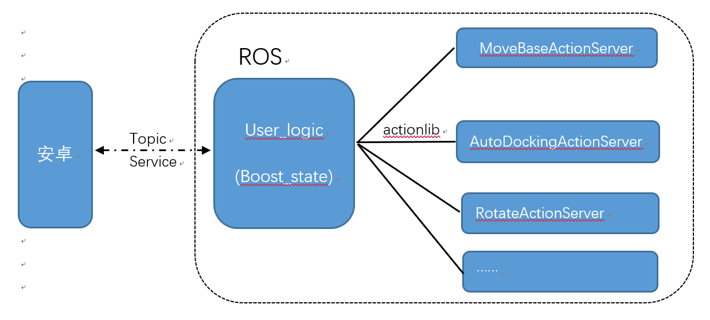
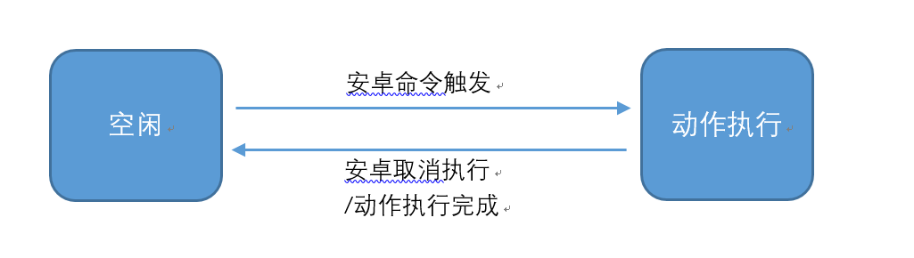

User_Logic_Node¶
该节点主要用于用户运动功能的逻辑处理，与安卓端的运动功能交互，运动状态反馈等。
主要依赖库¶
执行流程¶

收到用户端指令后，user_logic_node节点通过actionlib机制调用对应的ActionServer出发动作执行，同时对外实时发布当前状态。

机器人所有状态切换均由空闲状态转移，动作执行完成后或者被取消后，机器人再次进入空闲状态
功能列表¶
| action id | 对应ActionServer名称 | 描述 |
|---|---|---|
| "idle" | IdleActionServer | 空闲状态处理 |
| "sleep" | SleepActionServer | 休眠状态处理 |
| "safety_forward" | ForwardActionServer | 前进，遇到障碍物停止 |
| "movebase_goal" | MoveBaseActionServer | 导航到目标点 |
| "rotate" | RotateActionServer | 旋转一定角度(body 系) |
| "rotate_to" | RotateActionServer | 旋转到指定朝向(world 系) |
| "go_charging" | AutoDockingActionServer | 返回充电 |
| "separate_docker" | AutoDockingActionServer | 脱离充电桩 |
| "remote_telep" | RemoteTelepActionServer | 远程遥控，遇到障碍物停止 |